The scintillator converts ionizing radiation into pulses of light. The photodetector converts the light into an electrical signal that the rest of the chain can measure. The choice of photodetector is the second-most consequential decision in the detector chain, after the scintillator itself. This chapter covers the four families that dominate practical use: photomultiplier tubes (PMTs), silicon photodiodes, silicon photomultipliers (SiPMs), and microchannel plate PMTs, along with newer alternatives that are entering the catalog.
This chapter is heavily updated for the second edition. The most consequential change since the first edition is that silicon photomultipliers have matured enough to be the default rather than the exception in many product categories.
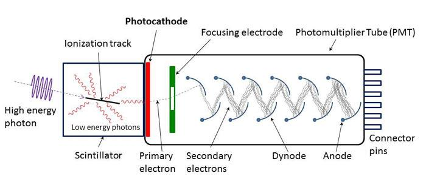
A photomultiplier tube converts incident photons into photoelectrons at a thin photocathode, then amplifies the photoelectrons through a series of dynodes operated at successively higher voltages. The net amplification of a 10-stage PMT is on the order of 10^5 to 10^6. Each scintillation pulse produces a charge pulse at the anode that can be measured directly or processed further.
The photocathode is a thin semi-transparent layer evaporated onto the inside of the tube's entrance window. Standard bialkali photocathodes use a Cs-Sb-K mixture and peak at 25 to 30 percent quantum efficiency in the 400 to 420 nm range. Multi-alkali (S20) photocathodes extend the useful response into the red. UV-extended photocathodes paired with quartz windows extend useful response down to 180 nm.
A photoelectron emitted from the cathode is electrostatically focused onto the first dynode. Each dynode multiplies incident electrons by a factor of 3 to 4 in standard designs. The cascade through 10 to 14 dynodes builds the gain to the necessary level. Voltage divider networks bias the dynode chain from a single high-voltage supply.
The dynode structure determines key characteristics. Linear-focused dynode chains optimize for fast timing. Box-and-grid structures favor uniformity at the cost of speed. Mesh dynodes offer some magnetic field tolerance. Channel-PMT structures (such as channel photomultipliers from Burle and Photonis) replace discrete dynodes with continuous channel walls.
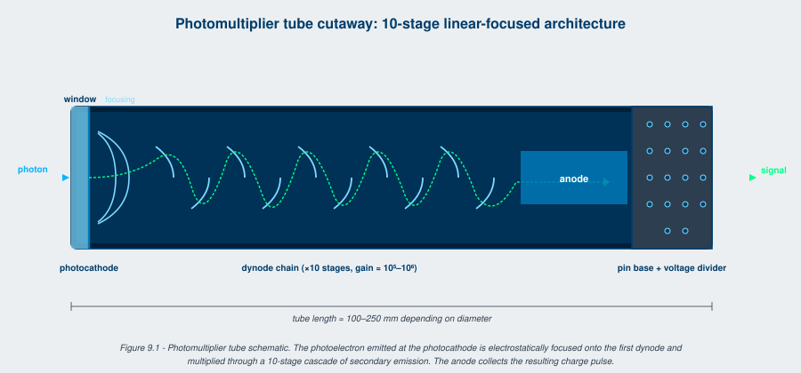
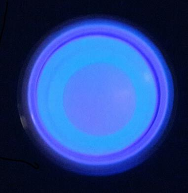
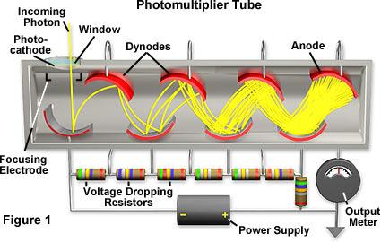
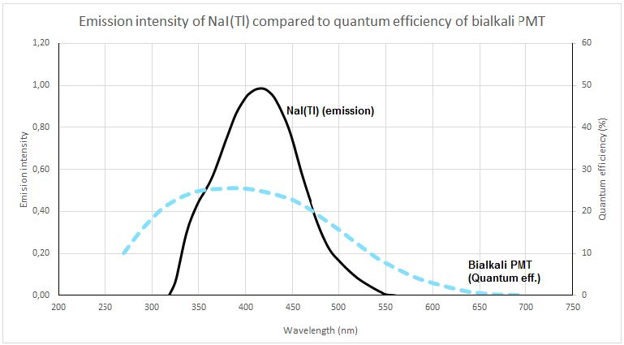
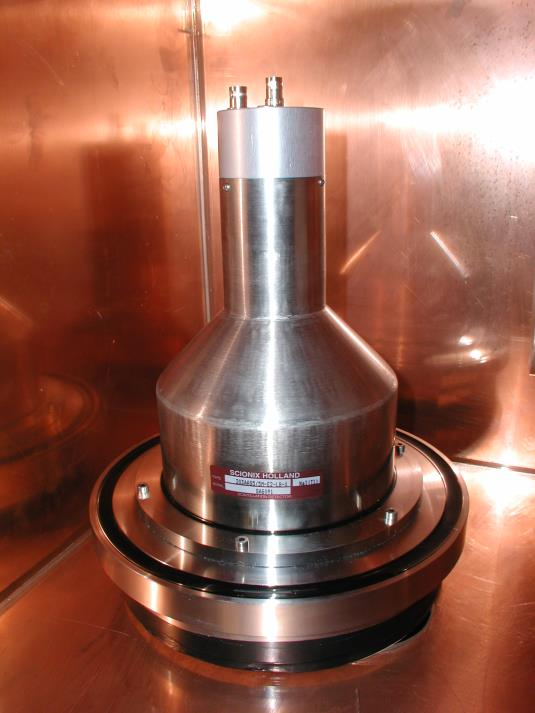
PMTs can be operated in two modes. Pulse mode, the standard for spectroscopy, treats each scintillation event as a discrete charge pulse and measures pulse height. Current mode measures the average anode current and is used in high-rate applications where individual pulse counting is impossible. Pulse mode preserves spectroscopic information; current mode loses it but enables continuous operation in radiation fields that would saturate a pulse-mode detector.
Important PMT parameters for the detector engineer:
PMTs have dominated scintillation readout for over half a century. Their advantages are large active areas at moderate cost (a 3-inch PMT is a standard product), large signals that simplify the front-end electronics, fast rise times in the right tube types, and a long history of characterization.
Their disadvantages are physical bulk (a 3-inch PMT is several inches long), high voltage operation (700 to 1500 V typical), gain instability with temperature, magnetic field sensitivity, and intrinsic radioactive background from the glass envelope.
In 2026, PMTs remain dominant in fixed-installation low-background counting, in any large-area detector where SiPM array cost would be prohibitive, and in legacy applications that have not migrated. They are giving ground to SiPM arrays in handheld instruments, compact configurations, and any application where the form factor or magnetic environment penalizes the PMT.
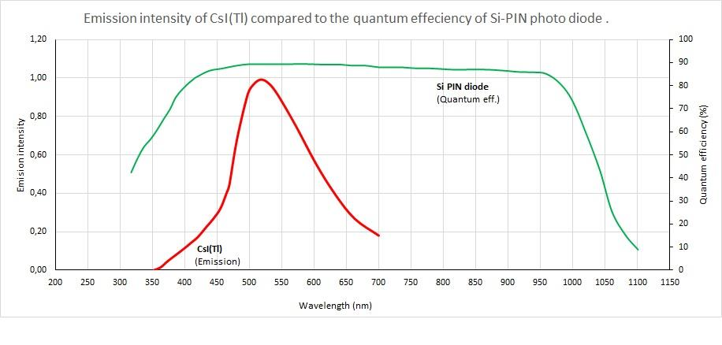
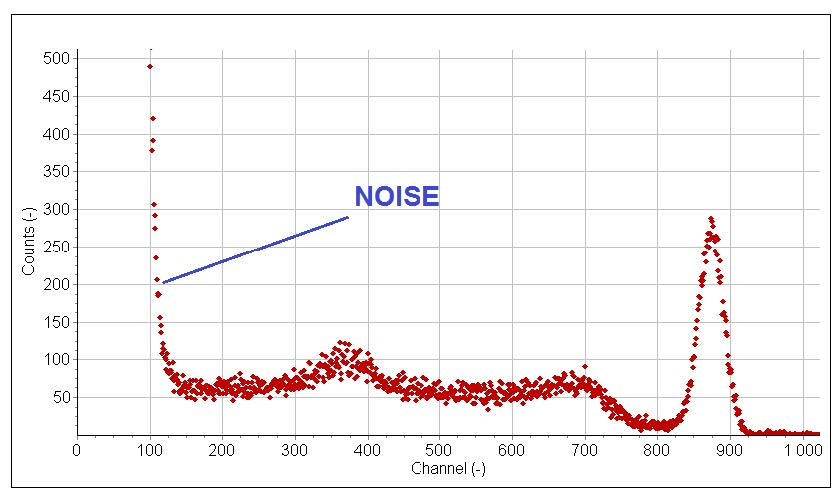
A photodiode is a reverse-biased semiconductor junction that produces electron-hole pairs when scintillation photons are absorbed. Each absorbed photon produces approximately one electron-hole pair (no internal multiplication). The collected charge is proportional to the absorbed light, and a charge-sensitive preamplifier converts it to a voltage pulse.
PIN photodiodes are the standard choice. Their wide intrinsic region maximizes the active volume for photon absorption while keeping capacitance and leakage current low.
Photodiode quantum efficiency exceeds 80 percent in the 500 to 900 nm range, much higher than PMT peak QE. For scintillators that emit in the green-to-red band (CsI(Tl) at 550 nm, GAGG:Ce at 520 nm), photodiode readout delivers more measured signal per scintillation photon than PMT readout. The trade-off is that photodiodes have unity gain, so the few-thousand-photon scintillation signal has to be amplified by a low-noise charge-sensitive preamplifier rather than by the photodetector itself. Electronic noise becomes the limiting factor at low signal levels.
Photodiodes are used in CT scanners (where the high signal level overwhelms the noise concern), in some specialized gamma cameras, and in applications where compact form factor and absence of high-voltage requirement matter more than ultimate noise floor.
APDs operate at higher reverse bias, where impact ionization in the depletion region produces internal multiplication of 50 to several hundred. This raises the signal above amplifier noise without requiring the kilovolts of a PMT. APDs were briefly the standard solid-state photodetector for scintillation readout in the 1990s and 2000s before being displaced by SiPMs.
APDs survive in some specialized applications: PET arrays where the linear gain and good spatial uniformity matter, and physics experiments where radiation hardness arguments favor APDs over SiPMs. But for most new designs, SiPMs have replaced APDs.
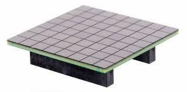
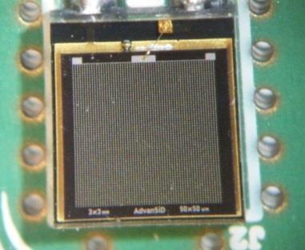
A silicon photomultiplier is an array of avalanche photodiode microcells operated above breakdown (Geiger mode). Each microcell that absorbs a photon produces a Geiger discharge with internal gain of 10^5 to 10^6, comparable to a PMT. The microcells are connected in parallel, so the SiPM output is the sum of the discharges from all cells fired. The output is approximately proportional to the number of photons absorbed across the array, up to saturation.
This is the most consequential photodetector development for scintillation readout in the past 25 years. The second edition of this book exists in part because SiPMs reached the level of maturity that justified rewriting the photodetector chapter.
A SiPM is fabricated as a CMOS-compatible silicon chip with thousands of identical microcells. Each microcell is an avalanche photodiode plus a quenching resistor that terminates the Geiger discharge. The cell pitch is typically 10 to 50 micrometers; smaller cells give higher dynamic range (more cells means less saturation per scintillation event) and smaller fill factor; larger cells give higher fill factor and PDE but saturate sooner.
Key parameters for the applications engineer:
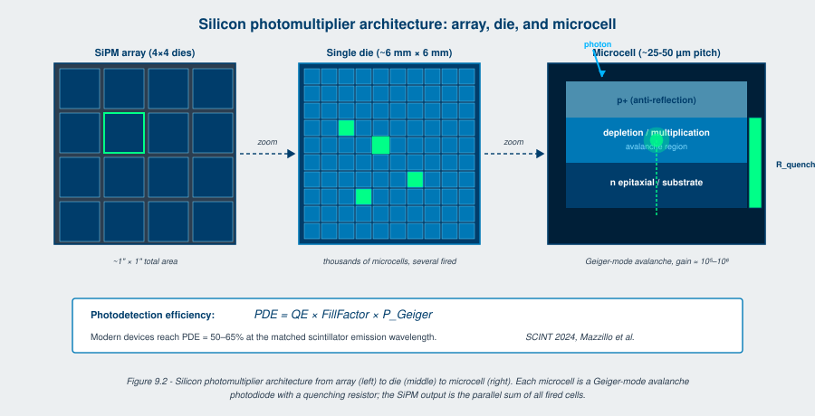
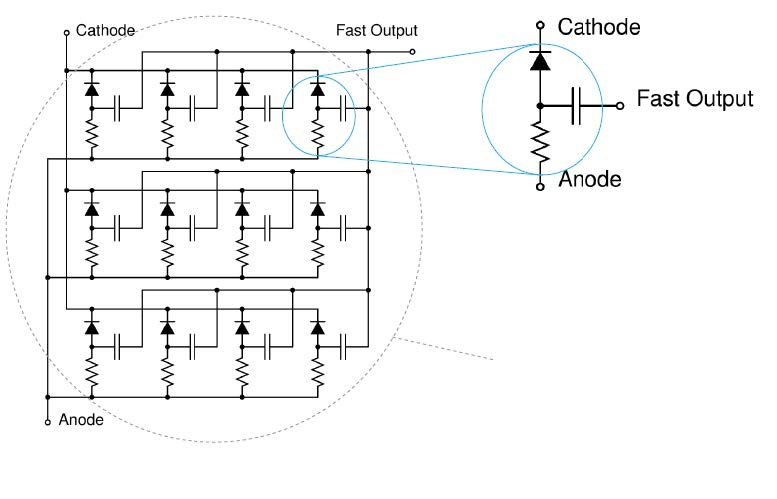
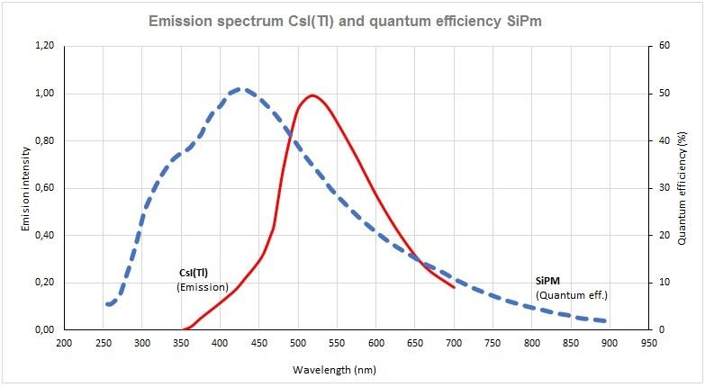
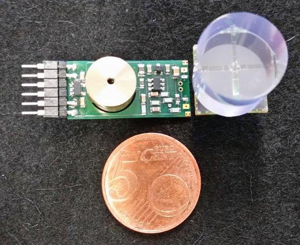
Reported progress in SiPM performance between 2018 and 2026 [1][2]:
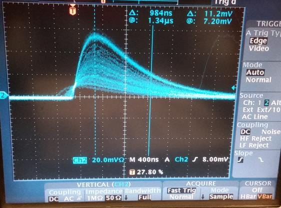
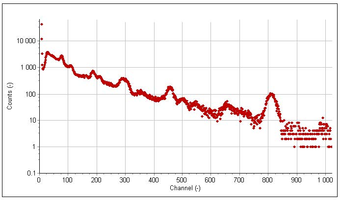
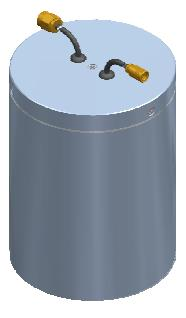
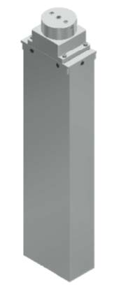
For larger crystal faces, multiple SiPM dies are tiled into arrays. Standard formats are 4x4, 8x8, and 16x16 dies, with 1, 3, or 6 mm cell sizes per die. Front-end ASICs (such as TOFPET2, PETIROC, MUSIC, MAROC) read out tens to thousands of channels with picosecond-accuracy timestamps.
The dead space between tiles is the binding limit on light extraction. Modern designs minimize this through butted die packaging and through ASIC choices that handle very small inter-die gaps. For a CsI(Tl) crystal with a typical 1-inch face, the loss to inter-tile dead space is 5 to 15 percent depending on the array design.
Going Deeper - SiPM dark count, crosstalk, and afterpulsing models
The total dark count rate at the SiPM output is:
DCR_obs = DCR_primary * (1 + p_xt + p_ap) / (1 - p_xt - p_ap)
where DCR_primary is the rate of primary Geiger discharges from thermal generation, p_xt is the optical crosstalk probability per discharge, and p_ap is the afterpulsing probability per discharge. The denominator captures cascading: a primary discharge can trigger a crosstalk event, which can itself trigger another crosstalk event, etc. For modern devices with p_xt around 0.05 and p_ap around 0.02, DCR_obs is roughly 10 percent above DCR_primary. For older devices with p_xt around 0.20, the inflation can exceed 50 percent. The detector engineer running pulse-height-versus-threshold scans on a SiPM-based detector will see the DCR contribution clearly at the lowest thresholds and should subtract it before drawing conclusions about the scintillation events. Dedicated SCINT 2024 sessions on SiPM characterization reported updated values for all these parameters across the major product lines [2].
Two newer photodetector technologies are entering the scintillation-readout space.
Microchannel plate PMTs (MCP-PMTs) replace the dynode chain with a microchannel plate, a glass disk with millions of micrometer-scale channels coated with a secondary-emission material. Each channel acts as a continuous-dynode multiplier. The result is sub-100-picosecond TTS, much faster than any conventional PMT, with comparable gain. MCP-PMTs are used in time-of-flight applications including PET, in particle physics, and in fast-timing fusion diagnostics. They are expensive (several to tens of thousands of dollars per tube) and have shorter operational lifetimes than standard PMTs because of channel aging.
Digital silicon photomultipliers (dSiPMs) integrate Geiger-mode microcells with CMOS readout circuitry on the same die. Each cell has its own digital counter and timestamping logic, eliminating the analog summing of conventional SiPMs. The output is a digital stream of timestamped photon counts. The technology is dominated by a few specialized vendors (Philips Digital Photon Counting until its acquisition; emerging products from semiconductor foundries). dSiPMs are the modern choice for the most demanding TOF-PET designs and for any application where per-photon timestamps simplify downstream analysis.
For some scintillation applications, the photodetector is not a single device but an imaging sensor.
CCDs (charge-coupled devices) and CMOS imagers read out scintillation light from imaging detectors used in X-ray and gamma imaging. The scintillator (typically CsI(Tl) or GAGG:Ce) is structured into pixels or columnar geometries that preserve spatial information, and the imager records the spatial distribution of scintillation. Used in dental and medical X-ray panels, in industrial radiography, and in security cargo imaging.
Fiber-coupled readout uses optical fibers to transport scintillation light from the crystal to a remote photodetector. This separates the photodetector from a hostile environment (high temperature, high radiation, vacuum) and is the standard solution for in-vessel diagnostics on fusion machines and for some down-hole tools.
The noise floor of the complete detector is the quadrature sum of:
For most well-designed scintillation detectors, photon statistics dominates at low energy and scintillator non-proportionality dominates at high energy. The photodetector contribution is rarely the limit in modern systems with PMT or SiPM readout. With photodiode readout, the front-end amplifier noise can become the limit at low signal levels, which is why photodiode readout is reserved for high-light-yield scintillators.
BNC in Practice - Specify the photodetector with the scintillator, not after
Customer requirements often arrive specifying a scintillator, with the photodetector left as "TBD" or "any standard option." This is the most common source of detector-design rework. The scintillator and photodetector are a system, not two independent choices. A NaI(Tl) crystal with a bialkali PMT and a NaI(Tl) crystal with a NUV-HD SiPM array are different products with different performance, different cost, different form factor, and different operating envelopes. The first conversation with the customer should pin down both choices simultaneously, or commit to a clear evaluation of both before any other design decisions are made.
The first edition of this book treated PMTs as the default and SiPMs as an emerging alternative. This second edition treats them as comparable choices, with the right answer depending on the application. The transition took roughly 15 years, started in the late 2000s, and is still incomplete in some product categories. By 2030, SiPM-based detectors are likely to dominate handheld and compact instruments completely, while PMTs hold the line in large-area, fixed-installation, and low-background applications. The third edition of this book, if it is written, will probably treat SiPMs as the default and PMTs as the niche choice. The catalog moves.
Take it interactively. The quiz lives on its own page. Pick one answer per question, then check your score. Auto-scored, and your answers are saved on this device. About 10 minutes.
Or read the questions and answers inline below (preserved for print and offline use).
[1] N. Otte et al., "Characterization of three high-efficiency and blue-sensitive silicon photomultipliers," Nucl. Instrum. Methods A, vol. 846, pp. 106-125, 2017.
[2] M. Mazzillo et al., "Recent advances in NUV-HD SiPM technology," in Proc. SCINT 2024, Milan, 2024.
[3] J. Hellma, "Temperature dependence of SiPM gain and breakdown voltage," in Proc. IEEE NSS-MIC 2024, Tampa, 2024.
[4] T. Frach et al., "The digital silicon photomultiplier: principle of operation and intrinsic